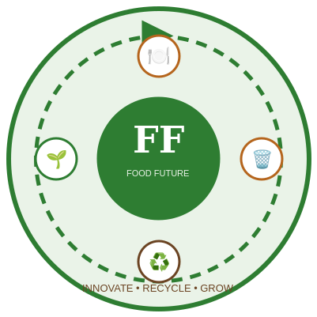

"Can yesterday's waste help grow tomorrow's food?"
Food waste is not simply rubbish. When food is wasted, the land, water, energy and labour used to produce it are wasted too. A large share of the food available to consumers is lost or wasted at the retail, food-service, and household stages.
We wanted to ask a different question than "how do we grow more food?" — we asked: "how do we waste less of the food we already have?"
We are testing whether food-waste compost affects early plant growth, using a controlled pot experiment with three treatments and four replicates each.
Independent variable: percentage of food-waste compost. Dependent variables: germination, height, and leaf count. We kept seed type, pot size, watering, and location as consistent as possible across all 12 pots.
Measurements are added throughout the 21-day experiment. Final results below.
(Fill in the three numbers below in the script once your Day 21 averages are ready — see the EDIT ME comment in the code.)
How much food waste might your household produce in a year?